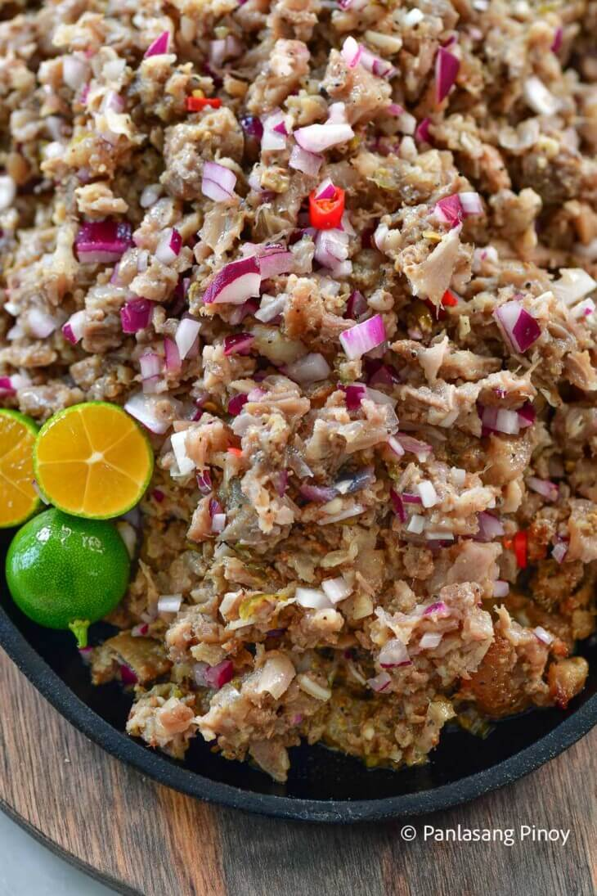

Sisig Recipe

Filipino Sisig (Krispy Kilig!)
Pork sisig is a popular Filipino dish. It can be considered as a main dish or an appetizer.
The composition of this dish is mainly of pig’s parts
such as minced pork meat, ears, and face.
Chicken liver, onions, and chili peppers are also added.
Ingredients for Sisig
- 1 lb pig ears
- 1 lb. pig snout
- 1 lb pork belly
- 2 pieces onions minced
- 3 pieces bay leaves
- 2 teaspoons salt
- 4 thumbs ginger crushed
- 1 quarts water
Sisig Dressing:
- ½ cup Lady’s Choice Mayonnaise
- 2 tablespoons sukang iloko see note 1
- ¼ teaspoon ground black pepper
- 1 teaspoon salt
- 1 teaspoon sugar
- ¼ cup liver spread see note 2
- 2 limes see note 3
- 1 tablespoon Knorr Liquid Seasoning
Equipment
- 1 Grill. You may use either gas or charcoal grill.
Steps to Cook for Sisig
- Combine pig ears, snout, pork belly, ginger, bay leaves, 2 teaspoons salt,
and 1 quart of water in a cooking pot. Boil for 1 hour.
Remove from the pot and drain the water.
- Heat-up your grill. Start grilling the pig parts for around 5
minutes per side. Remove from the grill afterwards and let it cool down.
- Make the dressing by combining all the dressing ingredients. Mix well.
- Chop the grilled pig parts into small pieces. In a large mixing bowl,
combine the chopped pork with onion and the dressing mixture.
Toss until all the ingredients are well blended.
- Transfer to a serving plate. Serve with your favorite drink. Share and enjoy!
Notes
- Sukang iloco is a type of vinegar made from fermented sugar cane juice.
This type of vinegar has a bold flavor that can be compared to wine vinegars.
You may use the following as substitutes: cane vinegar, white vinegar, and distillled vinegar.
- Fresh chicken livers are commonly used to make sisig. It
had to be boiled and mashed to have a paste-like consistency. The
use of liver spread or liver pate is more for convenience
in case chicken livers are not available.
- Limes are great to use for sisig. However, calamansi (calamondin) is a better fit if available.